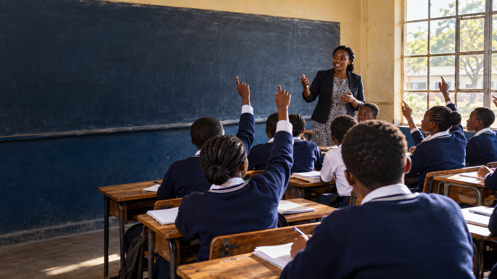
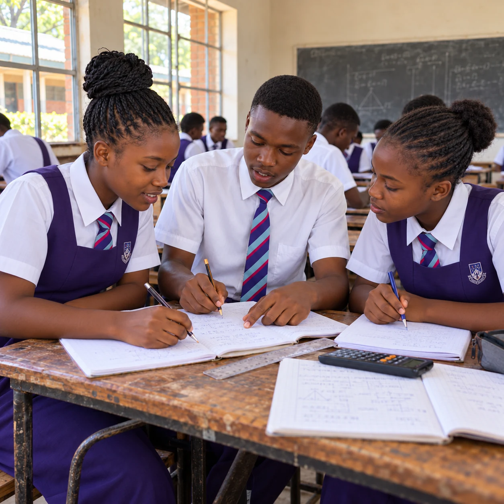
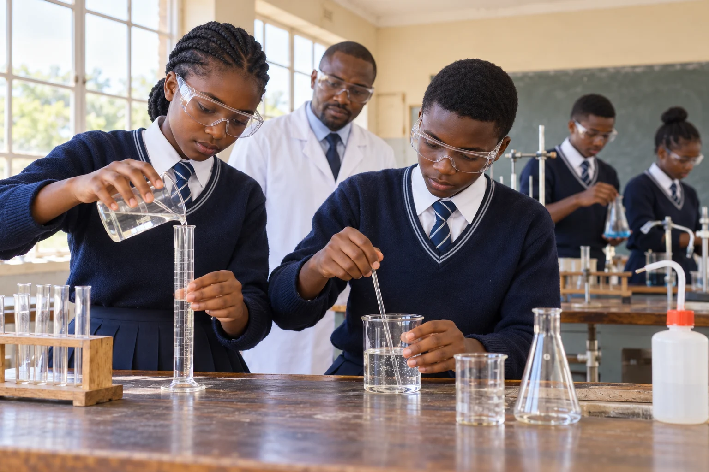
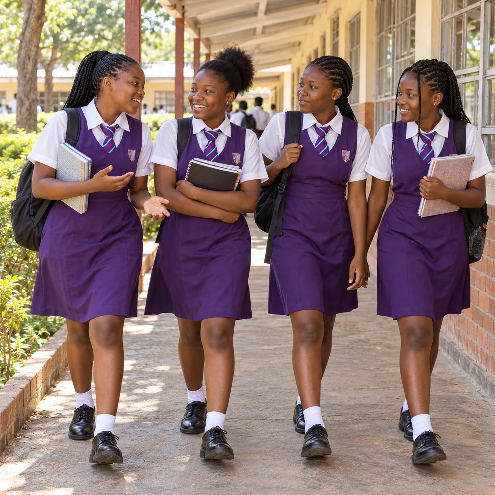

KNOWLEDGE. CONFIDENCE. POSSIBILITY.
A strong start.
A brighter future.
From the first page to the next chapter, discover learning at Mucheke High School.
Explore academics →Mucheke High School is a government secondary school in Mucheke, Masvingo, Zimbabwe. Our school brings together young people at different stages of their secondary education, from Form 1 through to Form 6. Learning here is about taking the next step: building knowledge, discovering interests and preparing for the opportunities ahead.

Mucheke High School serves learners from Masvingo’s busiest suburbs. With the support of partners and well-wishers, we make sure every learner, whatever their background, gets the chance to succeed.
University records document former student Dr Peter Baricholo’s enrolment in 1983 and completion of O Level studies in 1986. In 2018, local reporting described improvements to the school’s perimeter and plans to develop learning spaces.
Sources: NUST biography · TellZim, January 2018
Mucheke High School is supported by people who believe in its learners. In 2025, a book about Zimbabwean women entrepreneurs was launched in Masvingo. Every cent from its sales went to help disadvantaged learners at Mucheke High School.



Have a question about joining Mucheke High, subject choices or school life? Get in touch with the school to discuss the next step for your family.
Contact the school